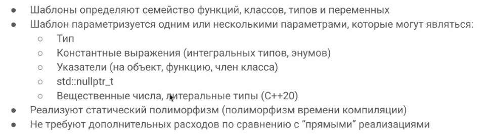
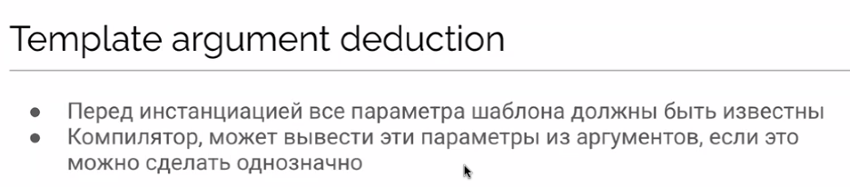
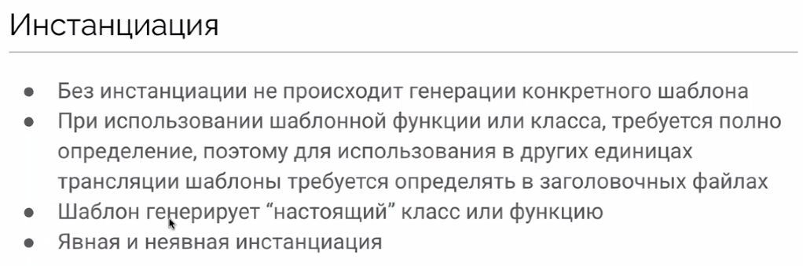
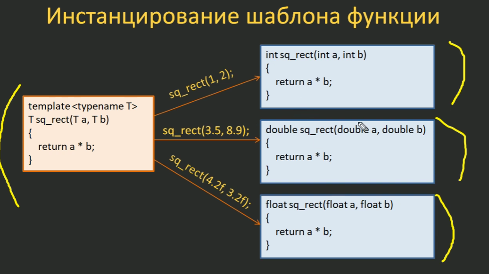
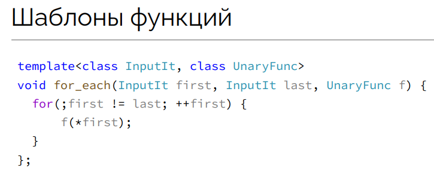
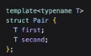
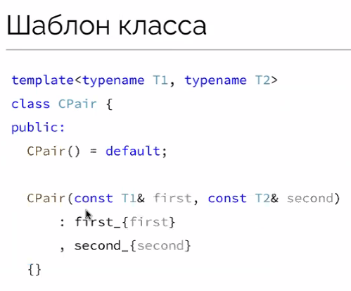
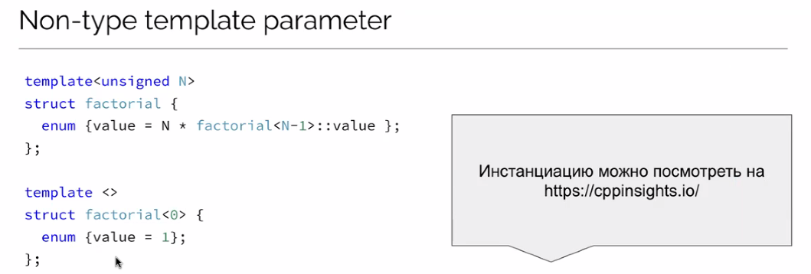
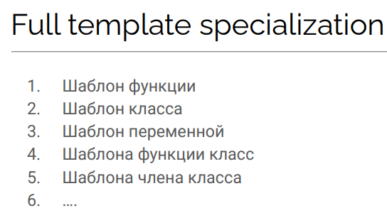

Шаблоны, специализация и vector
Обобщённые функции, классы и динамический массив.
Шаблоны С++ not OOP
Избавление от перегрузки для разных типов данных
Шаблоны помогают работать с разными типами данных Определяет целое семейство функции или классов "Шаблонная функция"
class тип данных, который называется T

Шаблонные могут быть
Класс, функция, метод
#include <iostream>
template <typename T>
const T& max(T& a, T& b) {
return a > b ? a : b;
}
int main() {
int a = 10;
int b = 15;
std::cout << max(a, b);
}
Если оба параметра используют один тип T, вывод типа должен дать одинаковый результат для обоих аргументов. Тип также должен поддерживать операции из тела шаблона.Аргументом шаблона может быть вызываемый объект.

При инстанцировании компилятор подставляет аргументы шаблона и формирует конкретную специализацию.
Инстанцирование происходит во время компиляции. Например, вызов с аргументом int может создать специализацию шаблонной функции для int.

#include <iostream>
template<class T, class B>
void Swap(T& x, B& y) {
std::swap(x, y);
}
int main() {
int x = 10;
int y = 11;
Swap(x, y);
std::cout << x;
}Когда применять class и typename
В объявлении параметра типа template <class T> и template <typename T> эквивалентны.
Шаблон класса

Методы класса тоже могут быть шаблонными.


При выводе аргументов шаблона класса (CTAD, C++17) компилятор может вывести параметры из аргументов конструктора.
Шаблоны и перегрузки поддерживают статический полиморфизм. Виртуальные методы поддерживают динамический полиморфизм.
Vector
Динамический массив, который сам следит за выделением памяти и может удалять добавлять

Специальные шаблоны
Позволяет писать шаблонный код, но делать специальные инстанциации для конкретного типа
Специализация не живёт без основного шаблона Полная специализация задаёт реализацию для конкретного набора аргументов шаблона.
Для объявления типового параметра допустимы class и typename. Соблюдайте стиль проекта.
ЧАСТИЧНАЯ СПЕЦИАЛИЗАЦИЯ
Для метода класса
Виды: полная полностью - определяем все шаблонные типы
При частичной специализации фиксируют часть параметров или задают шаблон для их формы. Например, специализация может обрабатывать все пары, первый тип которых — int.
Умный указатель unique_ptr